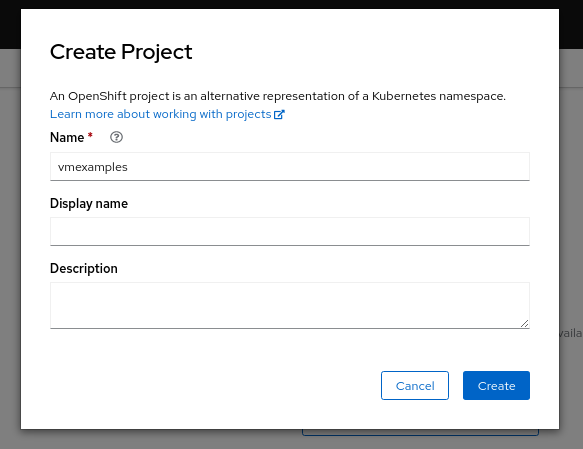
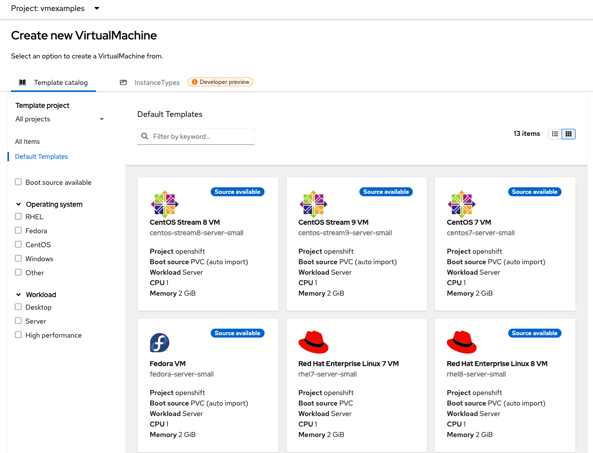
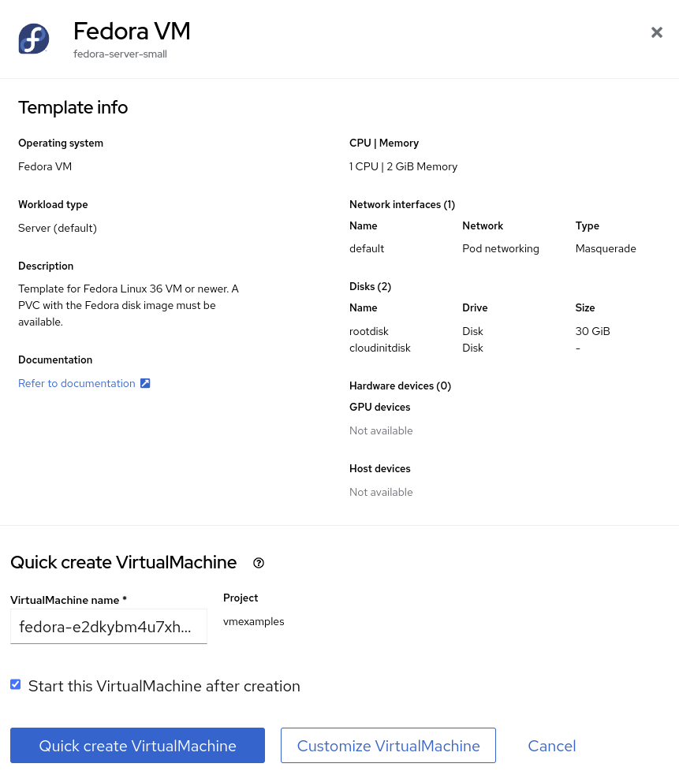
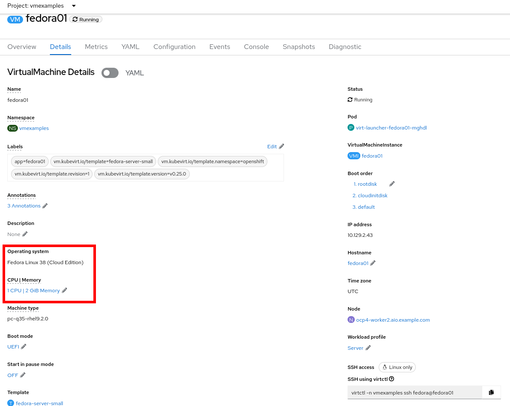
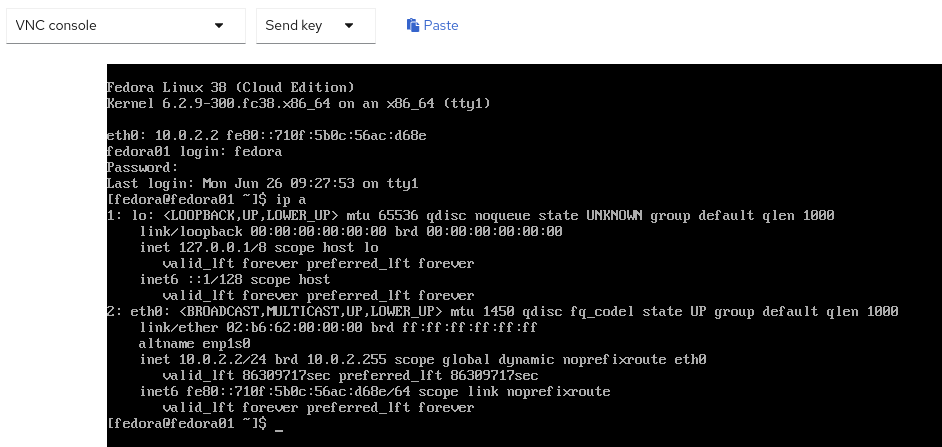
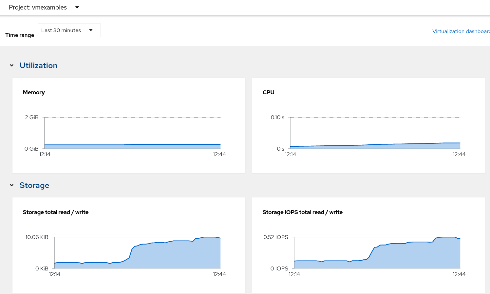
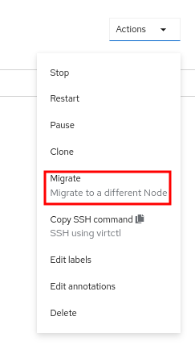
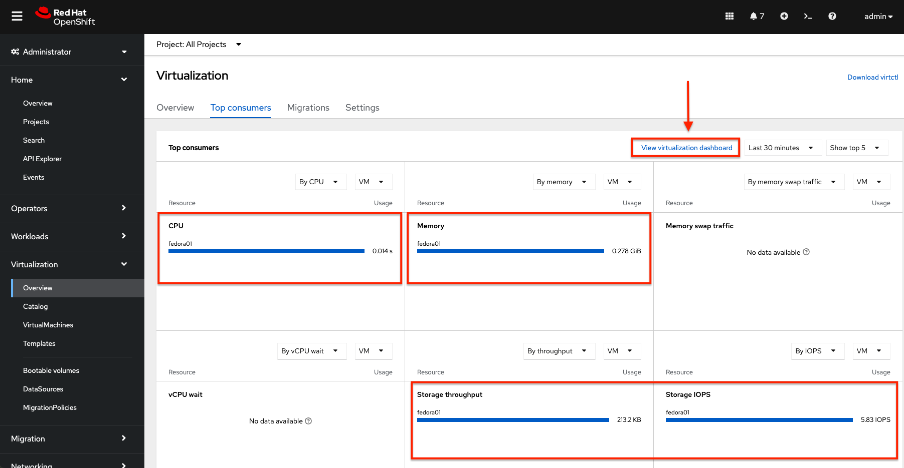

OpenShift Virtualization Basics
This lab will introduce you to the basics of creating and managing VMs in OpenShift Virtualization. You will see how the web console guides you through the whole process and how easy it is to review VM properties and do some basic customization. In the next lab you will customize the VMs a little bit further.
Among other things, this lab will show two methods for provisioning virtual machines, however, there are many different ways, and they are not limited to just what is shown here. All VM provisioning methods work with all supported operating systems.
Creating virtual machines is one of the most frequently accomplished tasks for a virtualization administrator. This section will walk through the process of creating a new virtual machine using a pre-created template. As the virtualization administrator, you have the ability to create your own templates that use guest operating system disks with your organization’s customizations, preferred VM sizing options, and additional customization options using cloud-init or sysprep.
In this lab, you become familiar with running virtual machines (VMs) on Red Hat® OpenShift® Container Platform. You create a new virtual machine based on a bootable operating system disk image provided in the default configuration of OpenShift Virtualization.
-
Create a new virtual machine
-
Access the VM console
-
Gain experience using the VM console
1. Create a new Project
Like other objects in OpenShift, Projects, which are an abstraction for Kubnernetes namespaces, are the boundaries for permissions and other aspects of using and manaing the resources. Creating a Project is an important first step for any deployment.
-
Browse to Virtualization → VirtualMachines using the left navigation menu:

The Virtualization tab is available only when Red Hat OpenShift Virtualization is installed and properly configured.
-
Examine the VirtualMachines dashboard that appears. There are currently several VMs listed, but are not turned on:

-
Before creating a VM we need to create a new project. Virtual machines are deployed to a specific project, or namespace, where, by default, users without permission to the namespace cannot access, manage, or control them. Administrators can access all projects, and therefore view all virtual machines, however regular users must be given access to projects as needed.
-
Click Project: All Projects and then click Create Project.
-
In the Name field, type
vmexamplesto name the project, then click Create.
-
2. Create a Linux virtual machine
-
From the Virtual Machines inventory, click Create VirtualMachine
-
The wizard will appear showing the available pre-defined VM templates.
Reviewing the list of available templates you’ll notice that some have a blue badge which indicates "Source available". These are templates which are using the automatically downloaded and stored template disks reviewed in the previous page. If you were deploying in your own environment, you have the option of preventing these from being created and/or removing those source disks, followed by creating and uploading custom disks for your organization.
 -
Select the Fedora VM tile, and a dialog opens.
 -
Change the name to
fedora01and press Quick create VirtualMachine:
-
After a few seconds, expect to see the VM is
Running. During this time, the storage provider has cloned the template disk so that it can be used by the newly created virtual machine. The amount of time this takes will depend on the storage provider. -
After the VM is created, examine the Events tab to see some details of the process. If there are any issues with the creation of the VM, they will show up on this tab as well.

-
A DataVolume is created. DataVolumes are used to manage the creation of a VM disk, abstracting the clone or import process onto OpenShift native storage during the virtual machine’s creation flow.
-
The VM is started.
-
-
Click the Details tab to obtain information related to the VM. Note that for this template, the default is 1 CPU and 2 GiB of memory. As the administrator, you can create templates that customize the default configuration of virtual machines.
The IP address of the virtual machine on the software-defined network (SDN) is also displayed here, along with information about the boot order, workload profile, the cluster node hosting the virtual machine, and more.

3. Access the virtual machine console
-
Click the Console tab to access the VM’s console:

-
Click Guest login credentials to see the password generated for the
fedorauser. This is only visible when the VM has been customized, which is done by default with this template, using OpenShift Virtualization to set the password using cloud-init.
-
Log in to the VM using the
fedorauser and the indicated password.You can click on Pasteto paste the password after copying it.If the Pastefunctionality is not working, take into consideration that the console input is using US keymap. One small trick is to write in the login the password to ensure you are writing the proper characters (specifically that the-character is correct). -
After you log in, run the
ip acommand to display the interfaces and IP addresses:Since this network adapter is connected to the SDN, the IP address assigned is an internal IP address used by the KVM hypervisor and is not an externally accessible IP. This IP will not change even if the VM is live migrated to a different node and the external IP where the VM is connected to the SDN changes.
-
Run
lsblkto display the list of disks and their capacities and free space:
-
/dev/vdais the disk created during the VM creation and is the size specified at creation time. -
/dev/vdbis used forcloud-initrequired data (for example, to configure thefedorauser password). This disk can be removed after the VM has been created.
-
-
Examine the number of CPUs and amount of memory associated with the VM (which match the
flavorspecified during creation), using thenprocandfree -mcommands:
-
To review the guest customization, mount the
cloud-initdisk: -
The instance is running the guest agent to surface information about the guest OS to the hypervisor, along with coordinating tasks such as disk quiescing for snapshots.

-
Click the Overview tab to show the information obtained from the guest VM, such as the disk utilization, along with seeing resource utilization information:

-
Hostname
-
Operating system version and timezone information
-
Active users
-
Utilization: CPU, Memory, Storage and Network.
-
-
You can navigate to the Metrics tab to obtain more information about the usage, including being able to specify the time range.

4. Live migrate a virtual machine
In this section, we will migrate the VM from one OpenShift node to another without shutting down the VM. Live migration requires ReadWriteMany (RWX) storage so that the VM disks can be mounted on both the source and destination nodes at the same time. OpenShift Virtualization, unlike other virtualization solutions, does not use monolithic datastores mounted to each cluster member that hold many VM disks for many different VMs. Instead, each VM disk is stored in its own volume that is only mounted when and where it’s needed.
-
Navigate to the Details tab to see where the worker node is running:
-
Using the menu Actions, press Migrate
 -
After a few seconds, the VM will change the status to
Migrating. A few seconds later, it will return to theRunningstatus, but on a different node. The VM has been successfully live migrated!
5. [Optional] Controlling virtual machine state
As a user with permission to access virtual machines, you can stop, start, restart, pause, and unpause virtual machines from the web console.
-
In the left menu, go back to Virtualization → VirtualMachines:
-
Select the Virtual Machine
fedora02from the list. -
Press the top-right dropdown, Actions, to list the available options:

-
Stop: Starts a graceful shutdown of the Virtual Machine.
-
Restart: This will send a signal to the operating system to reboot the Virtual Machine. Guest integrations are needed for this to work properly.
-
Pause: The process is frozen without further access to CPU resources and I/O, but the memory used by the VM at the hypervisor level will stay allocated.
-
-
Press Stop and wait till the Virtual Machine is in state
Stopped.
-
Clicking on Actions, the option Start appears, and the options Restart and Pause are greyed out.

-
Press Start, and wait for the
Runningstatus. -
Using the Actions menu, press the Pause option. The Virtual Machine state will change to
Paused.
-
Unpause the Virtual Machine using Actions and the option Unpause.
6. [Optional] Virtualization Overview dashboard
The overview dashboard provides a cluster-level view of virtual machines and resources used, along with status information for the health of OpenShift Virtualization and virtual machines. It is a useful starting point for administrators who want a quick and high-level view of what’s happening with OpenShift Virtualization.
-
From the left navigation menu, browse to Virtualization → Overview and select Project: → All projects
This overview page provides the OpenShift Virtualization administrator a global overview of the virtual machines in the cluster. A normal user would only see the VMs in his/her own project.
Don’t forget to check out the
Getting started resourcespanel and click the "View all quick starts" link there to access more information about OpenShift virtualization, including Quick Starts which provide many guided walkthroughs including how to create a VM and upload a custom boot source for your virtual machines.
-
Review the top consumers
Use the tabs across the top to view more about the virtualization resources in the cluster. For instance, the "Top consumers" tab shows the VMs which are "top consumers" of various resources, including CPU, memory, and storage. Note that in a newly created cluster, there are no consumers, so there is little to see in the beginning. You might also want to dig deeper into metrics by clicking on "View virtualization dashboard" link. That brings you to the KubeVirt Metrics Dashboard with more data and graphs.
If you don’t see any resources here, no VMs have been started in your lab. Revisit this page after this segment to see the overview details. 